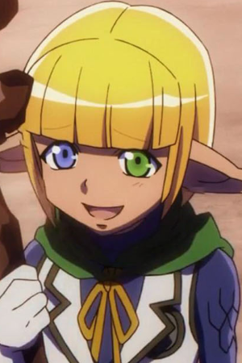
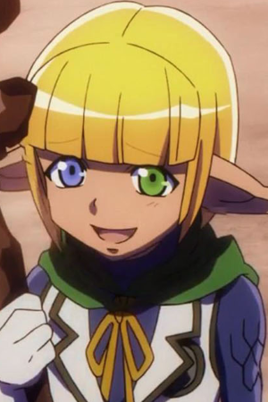

Guardians
Aura Bella Fiora and Mare Bello Fiore, Twin Guardians of the 6th Floor
- Aura Bella Fiore
- Skillful Tamer with High Competitive Spirit
- Gender Female
- Race: Dark Elf
- Affiliation: Great Tomb of Nazarick
- Occupation: 6th Floor Guardian
- Creator: Bukubukuchagama
- Total Level: 100
- Racial Level: None
 

- Name: Mare Bello Fiore
- Titles: Untrustworthy Disciple of Nature
- Gender: Male
- Race: Dark Elf
- Affiliation: Great Tomb of Nazarick
- Occupation: 6th Floor Guardian
- Creator: Bukubukuchagama
- Total Level: 100
- Racial Level: None
Fun facts about the dark elfs twins
The sister Aura is a cheerful and tomboyish girl who can openly express her emotion and thought. She often orders her brother around and takes him to wherever she wants to. In addition, Aura and Shalltear often quarrels with each other.
This may not sound as much at first but if we take their creators into consideration, Shalltear creator – Peroroncino and Aura’s creator Bukubukuchagama are actually brother and sister in real life. And as you might have guessed, they also often quarrel with each other and as the results; their creations also inherit this… trait.
On the contrary, the brother Mare is completely opposite to Aura. He is shy and most the time he does not seem to express his opinion confidently. Also unlike Aura, he does not seem to have any sort of conflict with Shalltear (or at least he does not openly talk about that).
But no matter how different they are, the twin shares a same characteristic: extreme loyalty towards their creators and in this case, Momonga – Ainz Ooal Gown.
In terms of power, if you have looked at Aura’s jobs, you will see that she is kind of hunter – beast master. For easier imagination, we can compare her to Hunter Class in World of Warcraft. As a hunter and beast tamer, Aura does not excel at straightforward combat but rather, she relies on long-ranged, guerilla-style of combat combining with her beasts. On the other hand, Mare is a druid with supporting and nature-controlling abilities. Although we haven’t seen Mare in battle, it is said that his fighting capability can be comparable with Shalltear.
https://www.youtube.com/embed/Zy3oNgCG2LE?start=26